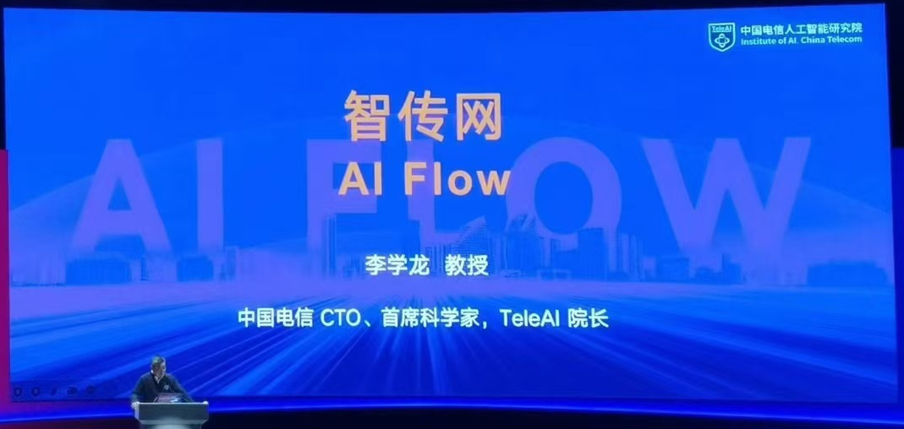
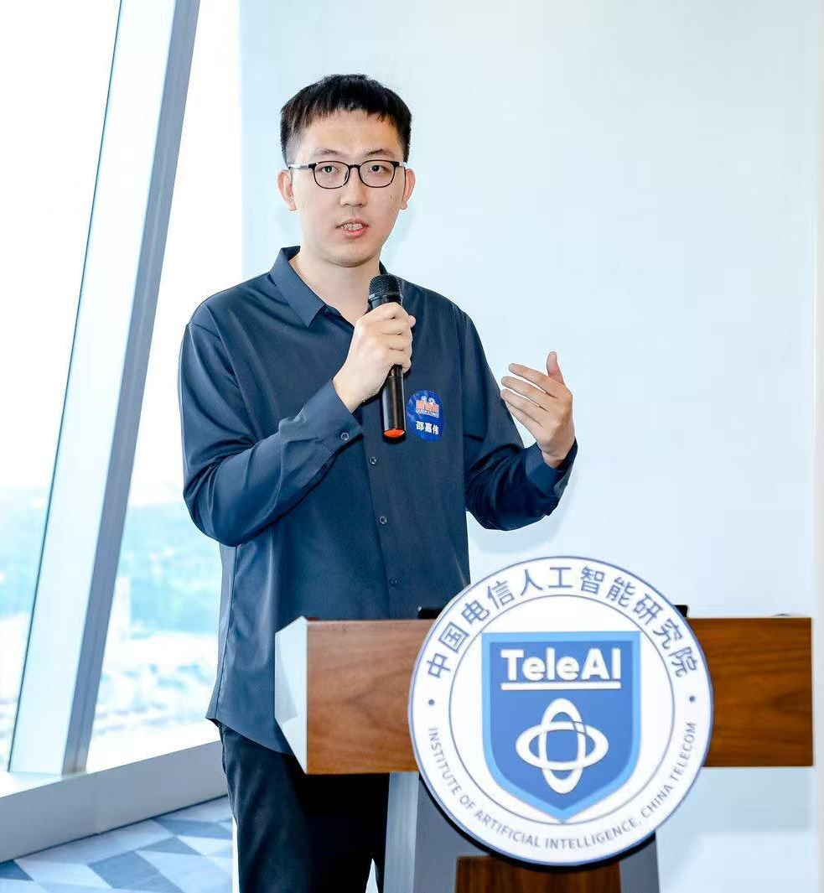
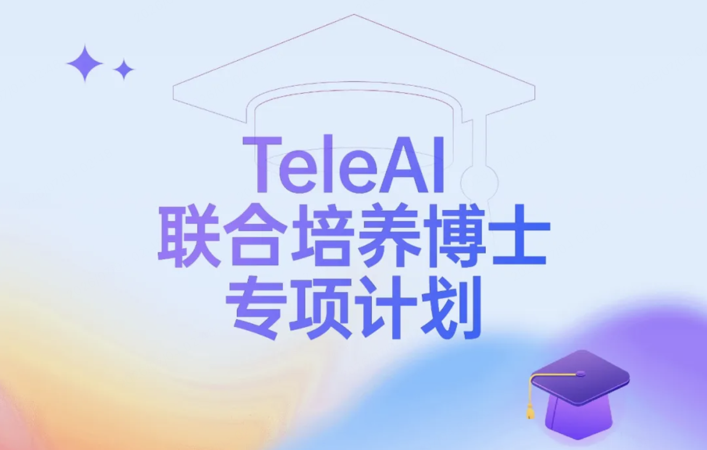

Institute of Artificial Intelligence (TeleAI), China Telecom
中国电信股份有限公司人工智能研究院（上海）
Serve as a group leader under the direction of Prof. Xuelong Li 李学龙教授，中国电信CTO、首席科学家，TeleAI院长
AI Flow Group
Jiawei Shao has been serving as a group leader in TeleAI, China Telecom, under the direction of Prof. Xuelong Li 李学龙教授.
The AI Flow group focuses on exploring the intersection between artificial intelligence and communication systems, covering research topics including large language models and multimodality, video compression with generative models, and distributed intelligence.
Opening
There are multiple openings for Researchers, Research Engineers, Research Interns, and PhD students. If you are interested in joining TeleAI, please send your CV to shaojw2@chinatelecom.cn, with a copy to jiawei.shao@connect.ust.hk.
More information about the TeleAI Joint PhD Program (TeleAI 2027级联培博士招生) is here.
